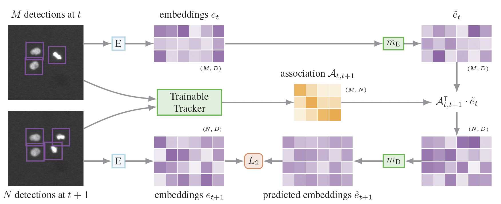
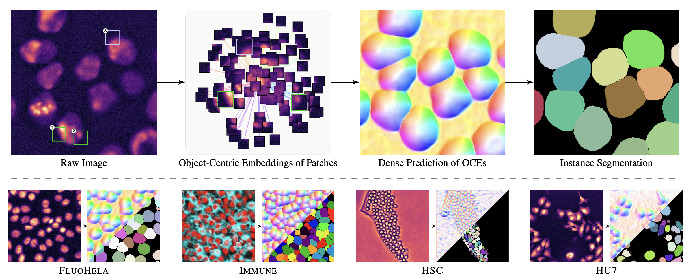
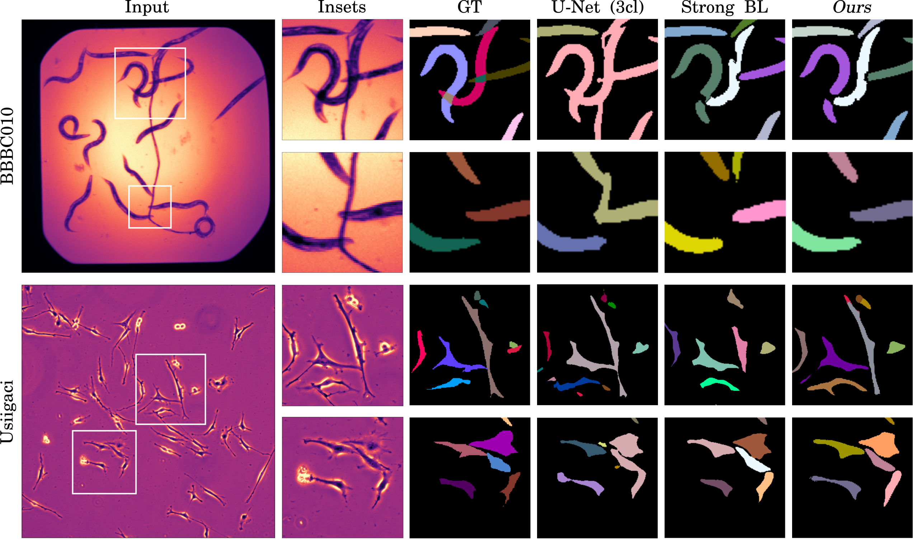
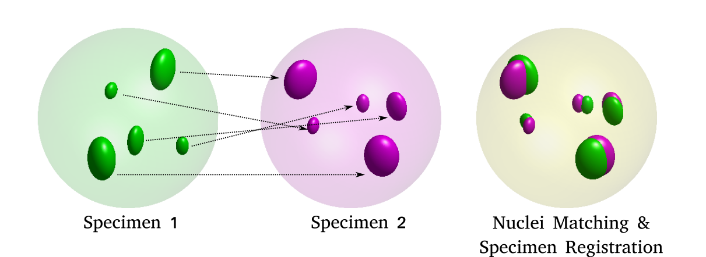
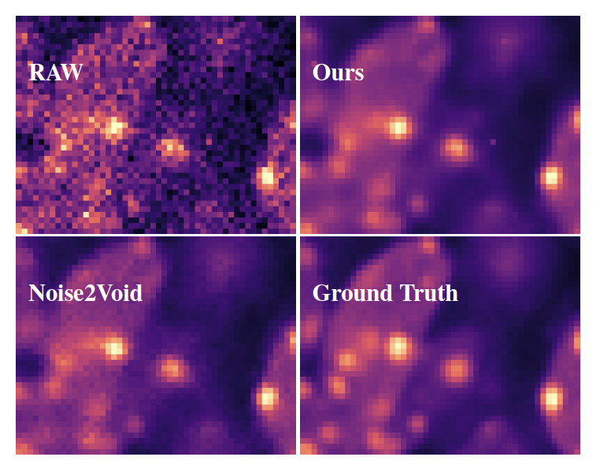

Education
Machine Learning Researcher
Funke Lab
HHMI Janelia Research Campus
Google Scholar
I design deep learning-based methods and implement software for instance segmentation and lineage tracing in 2D and 3D time-lapse microscopy of developing embryos.

An Investigation of Unsupervised Cell Tracking and Interactive Fine-Tuning.
Bio Image Computing Workshop, International Conference for Computer Vision (ICCV) (2025).
We introduce

Unsupervised Learning of Object-Centric Embeddings for Cell Instance Segmentation in Microscopy Images.
International Conference for Computer Vision (ICCV) (2023).
DOI: 10.48550/arXiv.2310.08501
We introduce
GitHub

EmbedSeg: Embedding-based Instance Segmentation for Biomedical Microscopy Data.
Medical Image Analysis (2022).
DOI: 10.1016/j.media.2022.102523
We present
Slides
GitHub

Registration of Multi‐modal Volumetric Images by Establishing Cell Correspondence.
Bio Image Computing Workshop, European Conference for Computer Vision (ECCV) (2020).
DOI: 10.1007/978-3-030-66415-2_30
We present
Slides
GitHub

Fully Unsupervised Probabilistic Noise2Void
International Symposium on Biomedical Imaging (ISBI) (2020).
DOI: 10.48550/arXiv.1911.12291
We present
Slides
GitHub
Education
2018-22 Ph.D. Max Planck Institute (MPI-CBG) Computer Science
2012-14 M.Sc. Chalmers University of Technology Applied Mechanics
2007-11 B.Tech. Indian Institute of Technology Kanpur Mechanical Engineering
Experience
2023 - ... | Machine Learning Researcher | HHMI Janelia Research Campus, Ashburn
Advised by Jan Funke.
Developed
2022 - 2023 | Postdoctoral Fellow | Max Planck Institute, Dresden
Co-advised by Pavel Tomancak and Florian Jug.
Built a registration pipeline to align 3D confocal images of fixed, in situ specimens with 3D+t light-sheet microscopy movies of developing embryos.
2014 - 2017 | Computational Aero-Acoustics Engineer | Competence Center for Gas Exchange and Scania AB, Stockholm
Advised by Mikael Karlsson.
Developed a computational model leveraging thermo-acoustic interactions for energy recovery from automotive exhaust heat.
Selected
Publications
An Investigation of Unsupervised Cell Tracking and Interactive Fine-Tuning.
Bio-Image Computing Workshop. International Conference on Computer Vision (ICCV), 2025.
Unsupervised Learning of Object-Centric Embeddings for Cell Instance Segmentation in Microscopy Images.
International Conference on Computer Vision (ICCV), 2023.
DOI: 10.48550/arXiv.2310.08501
Nanog organizes Transcription Bodies.
Current Biology, 2023.
DOI: 10.1016/j.cub.2022.11.015
EmbedSeg: Embedding-based Instance Segmentation for Biomedical Microscopy Data.
Medical Image Analysis, 2022.
DOI: 10.1016/j.media.2022.102523
Embedding-based Instance Segmentation in Microscopy.
Medical Imaging with Deep Learning (MIDL), 2021.
DOI: proceedings.mlr.press/v143/lalit21.html
Modeling expression ranks for noise-tolerant differential expression analysis of scRNA-seq data.
Genome Research, 2021.
DOI: 10.1101/gr.267070.120
Registration of Multi‐modal Volumetric Images by Establishing Cell Correspondence.
Bio-Image Computing Workshop. European Conference on Computer Vision (ECCV), 2020.
DOI: 10.1007/978-3-030-66415-2_30
Fully Unsupervised Probabilistic Noise2Void.
International Symposium on Biomedical Imaging (ISBI), 2020.
DOI: 10.48550/arXiv.1911.12291
Leveraging Self-supervised Denoising for Image Segmentation.
International Symposium on Biomedical Imaging (ISBI), 2020.
DOI: 10.48550/arXiv.1911.12239
Probabilistic Noise2Void: Unsupervised Content-Aware Denoising.
Frontiers in Computer Science, 2020.
DOI: 10.3389/fcomp.2020.00005
A Note on the Applicability of Thermo-Acoustic Engines for Automotive Waste Heat Recovery.
SAE International Journal of Materials and Manufacturing, 2016.
DOI: 10.4271/2016-01-0223